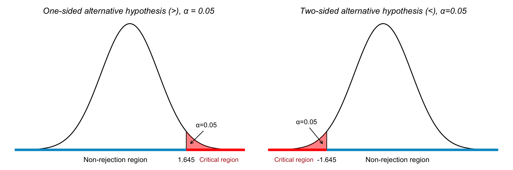

22 Hypothesis Testing
In the previous chapter, we used confidence intervals to estimate an unknown population parameter such as the mean (\(\mu\)) or proportion (\(p\)), based on a random sample. Confidence intervals provide a range of plausible values for that parameter.
While confidence intervals focus on estimation, hypothesis testing addresses decision-making: it allows us to test specific claims about a population parameter using sample data. In fact, these two methods are closely related; we can often reach the same conclusions using either approach. We return to this in more detail later in this chapter.
22.1 What Is Hypothesis Testing?
Hypothesis testing is a formal method used to evaluate two competing statements (called hypotheses) about a population parameter:
- Null hypothesis (\(H_0\)): The default or status quo assumption.
- Alternative hypothesis (\(H_1\) or \(H_a\)): A competing claim that we seek evidence for.
We use data from a sample to decide whether there is sufficient evidence to reject the null hypothesis in favor of the alternative. The null hypothesis (\(H_0\)) is assumed to be true unless the evidence from the sample strongly contradicts it. It plays the role of a “presumption of innocence.” The alternative hypothesis (\(H_1\)) is what we hope to support, but only if we have enough evidence to doubt \(H_0\).
We never prove the alternative hypothesis directly; we can only reject \(H_0\) if the evidence is strong enough, just like a jury does not prove guilt, but rather rejects the assumption of innocence when the evidence demands it. Rejecting \(H_0\) only indicates that the data are inconsistent with \(H_0\) under the assumed conditions.
Example 22.1: Bottled Water Production
A company bottles 500 ml of spring water per bottle. To ensure customer trust, they need to verify that the filling process remains accurate. Let
\[ \mu = \text{true average amount of water per bottle} \]
We want to test whether the bottling machine is still calibrated correctly:
\(H_0\): \(\mu = 500\) (machine is accurate)
\(H_1\): \(\mu \neq 500\) (machine is underfilling or overfilling)
That is, the alternative hypothesis says: “The machine does not have the correct precision.”
Example 22.2: Political Party Support
In a political opinion poll, 14% of the selected individuals say they support Party A. We know that in the most recent election, Party A received 12% of the votes. Has the proportion of A-supporters in the population increased since the election?
\(H_0\): \(P = 0.12\) (The proportion is unchanged)
\(H_1\): \(P > 0.12\) (The proportion has increased)
Should we reject \(H_0\) or not?
- If we consider the high sample value to be explainable by chance (assuming \(H_0\) is true), we stick with \(H_0\).
- If we consider the sample proportion to be too high to be reasonably explained by chance, we reject \(H_0\).
We can never be 100% certain that we are making the correct decision. Statistical hypothesis testing involves using specific decision rules to determine when we should reject \(H_0\) (and when we should retain \(H_0\)). These decision rules are designed so that we have a certain level of control over the risk of making an incorrect decision.
To understand the reasoning behind hypothesis testing, it can be helpful to draw an analogy from the legal system. Imagine a courtroom trial where the task is to determine whether the defendant is guilty or not. A key question in this context is: on whom does the burden of proof lie?
Just as in most legal systems, where a person is presumed innocent until proven guilty, hypothesis testing begins with a similar assumption. The null hypothesis, denoted \(H_0\), plays the role of “innocence”: it is the claim we initially assume to be true. The alternative hypothesis, denoted \(H_1\), corresponds to the prosecution’s claim: it challenges the status quo and must be supported by strong evidence.
There is an asymmetry in how we treat the null hypothesis (\(H_0\)) and the alternative hypothesis (\(H_1\)) in statistical hypothesis testing. We typically choose \(H_0\) to be the hypothesis that we hold on to as long as possible. It is the default assumption, often representing “no change,” “no effect,” or “no difference.” On the other hand, \(H_1\) is usually the more bold and interesting hypothesis from an applied perspective.
We require particularly strong evidence from the observed data to reject \(H_0\). The burden of proof lies with the party advocating for \(H_1\). Before diving into how to best use information from the sample, we ask ourselves: how confident must we be that the accused is guilty before reaching a guilty verdict? Similarly, how confident must we be that the null hypothesis is incorrect before deciding to believe in the alternative hypothesis?
If we reach that level of confidence, we say that we reject the null hypothesis (or accept the alternative hypothesis). The degree of confidence required depends on the context, but typically, we want to be quite certain that the assumption in the null hypothesis is incorrect. This is because the decision to reject the null hypothesis, and instead believe in the alternative, often comes with serious consequences.
22.2 Classical Hypothesis Testing
The classical approach to hypothesis testing involves the following six main steps:
Step 1. Hypotheses
Begin by formulating the null hypothesis (\(H_0\)) and the alternative hypothesis (\(H_1\)).
Examples of hypotheses about population means:
\(H_0: \mu = \mu_0\); \(H_1: \mu \ne \mu_0\)
(Simple null hypothesis; two-sided alternative)\(H_0: \mu \le \mu_0\); \(H_1: \mu > \mu_0\)
(Composite null hypothesis; one-sided alternative)
Examples of hypotheses about population proportions:
\(H_0: p = p_0\); \(H_1: p \ne p_0\)
(Simple null hypothesis; two-sided alternative)\(H_0: p = p_0\); \(H_1: p > p_0\)
(Simple null hypothesis; one-sided alternative)
Step 2. Significance Level
Choose a significance level \(\alpha\), which represents the probability (or risk) of rejecting the null hypothesis \(H_0\) when it is actually true.
A common choice is \(\alpha = 0.05\), which implies that the hypothesis test is conducted at the 5% level. This means that there is a 5% chance of making a Type I error, that is rejecting a true null hypothesis. In other words, if the null hypothesis is true, then on average, 1 in every 20 tests will incorrectly reject it. If we want to be more cautious about rejecting a correct null hypothesis, we use a smaller \(\alpha\), such as \(\alpha = 0.01\).
Step 3. Test Statistic
Specify which test statistic will be used. A test statistic is a quantity calculated from the sample data and its value forms the basis of our decision (see step 5).
The choice of test statistic depends on:
- Whether the sample is large or not.
- Whether the population is normally distributed or not.
- Whether the population variance is known or not.
We’ll return to these different cases in more detail below.
Step 4: Decision Rule
Specify the rejection region (the critical region), such that \(H_0\) is rejected if the test statistic falls within this region. In summary, the form of the critical region is determined by:
-
The form of the alternative hypothesis:
- \(H_1: \mu \neq \mu_0\) → two-tailed test → rejection region in both tails.
- \(H_1: \mu > \mu_0\) → one-tailed test → rejection region in the right tail.
- \(H_1: \mu < \mu_0\) → one-tailed test → rejection region in the left tail.
The significance level \(\alpha\).
Alternative hypotheses of the forms \(>\) and \(<\) are called one-sided, while those using \(\neq\) are called two-sided. Figure 22.1 illustrates the decision framework of hypothesis testing three panels:
Left: Depicts a two-tailed test, where both tails of the distribution represent critical regions. The dashed lines mark the critical values at \(z = \pm z_{\alpha/2}\). Each tail has an area of \(\alpha/2\), and the null hypothesis is rejected if the test statistic lies in either shaded tail. The central blue segment indicates the non-rejection region.
Right: Represents a one-sided test with the alternative hypothesis \(H_1: \mu > \mu_0\). The right tail is shaded red, indicating the critical region with area \(\alpha\). The test statistic must fall in this region to reject \(H_0\).
Middle: Shows the critical region in the left tail of the distribution, representing a one-sided test with the alternative hypothesis \(H_1: \mu < \mu_0\). The red-shaded area corresponds to the significance level \(\alpha\), and any test statistic falling in this region leads to rejection of the null hypothesis \(H_0\).
Errors and Decision Framework
When making a decision, one either makes a correct choice or one of two types of errors. Just as there is a risk that an innocent person may be wrongly convicted, there is also a risk that a guilty person may go free.
Using probability theory, we can to some extent determine the risk of making incorrect decisions.
A Type I error occurs when we incorrectly reject the null hypothesis (\(H_0\)) even though it is true. The risk of making a Type I error is called the significance level of the test and is denoted by the Greek letter \(\alpha\).
A Type II error occurs when we incorrectly fail to reject the null hypothesis, even though it is false. The risk of this error is denoted by the Greek letter \(\beta\).
A diagram describing the possible outcomes of hypothesis testing is shown below:
| Reality | \(H_0\) is true | \(H_0\) is false |
|---|---|---|
| Decision | ||
| Do not reject \(H_0\) | Correct decision | Type II error (incorrect decision) |
| Reject \(H_0\) | Type I error (incorrect decision) | Correct decision |
In classical hypothesis testing, we primarily control the probability of making a Type I error. This is done by setting the significance level \(\alpha\) to a predefined low value (commonly \(\alpha = 0.01\), \(0.05\), or \(0.10\)).
\[ \alpha = \text{Significance level of the test} = P(\text{Reject } H_0 \mid H_0 \text{ is true}) \]
After setting the acceptable level for Type I errors, we then aim to reduce the probability of Type II errors (\(\beta\)) by choosing a sufficiently large sample size.
Once the hypotheses have been formulated, the appropriate test statistic selected and decision rules specified, we proceed with the final steps of the classical hypothesis testing procedure:
Step 5: Observation
We calculate the value of the test statistic using the data obtained from the sample. This computation allows us to compare the observed value with the theoretical distribution under the null hypothesis. This value is what we refere to as our observed value.
Step 6: Conclusion
Based on the value of the test statistic (our observed value), we make our decision based on the decision rule:
If the value falls outside the critical boundaries (i.e. outside the non-rejection region), we reject the null hypothesis \(H_0\). This means that we have obtained a result that is statistically significant at the chosen significance level \(\alpha\).
If the value falls within the non-rejection region, we do not reject \(H_0\). In this case, the result is said to be not statistically significant.
In essence, these final steps guide us in deciding whether the sample data provides enough evidence to conclude that the null hypothesis is unlikely to be true, given the selected confidence level.
Note
A non-significant result does not mean that we can conclude the null hypothesis (\(H_0\)) is true. It simply indicates that the alternative hypothesis (\(H_1\)) does not present strong enough evidence against \(H_0\) in this particular case.
There may be many other potential null hypotheses that would also not be rejected. Therefore, failing to reject \(H_0\) is not the same as accepting \(H_0\) as true.
In other words, we use the terms ‘reject’ and ‘fail to reject’ to summarize the possible outcomes of a hypothesis test
22.3 Hypothesis Testing for a Population Mean
Just as with confidence intervals, different cases must be considered when conducting hypothesis tests:
- Is the sample size large or small?
- Is the population normally distributed?
- Is the population variance known?
22.3.1 Two-Sided Hypothesis Tests
We begin with an example: suppose we draw a sample of size \(n\) from a normally distributed population where the mean \(\mu\) is unknown but the variance \(\sigma^2\) is known. We conduct a two-sided hypothesis test at a significance level \(\alpha = 0.05\), walking through the six steps of hypothesis testing.
1. Hypotheses
We want to test whether the population mean equals some hypothesized value \(\mu_0\). The hypotheses are:
\[ H_0: \mu = \mu_0 \\ H_1: \mu \ne \mu_0 \]
This is a two-sided test, as we are considering deviations in both directions from \(\mu_0\).
2. Significance Level
We choose a significance level of:
\[ \alpha = 0.05 \]
This indicates we are willing to accept a 5% chance of rejecting the null hypothesis if it is actually true.
3. Test Statistic
Since the population is normally distributed and the population standard deviation \(\sigma\) is known, we use the standard normal \(Z\) statistic:
\[ Z = \frac{\bar{x} - \mu_0}{\sigma / \sqrt{n}} \]
Under \(H_0\), the statistic follows the standard normal distribution:
\[ Z \sim N(0, 1) \]
4. Decision Rule
For a two-sided test with \(\alpha = 0.05\), the critical values are:
\[ z_{\alpha/2} = \pm 1.96 \]
The decision rule is:
- Reject \(H_0\) if \(|z_{\text{obs}}| > 1.96\)
- Otherwise, do not reject \(H_0\)
The critical regions for this test is visualized in Figure 22.2, where we see the threshold for rejecting \(H_0\) in both directions when testing for a deviation from a hypothesized population mean.

5. Observation
Compute the observed value of the test statistic:
\[ z_{\text{obs}} = \frac{\bar{x} - \mu_0}{\sigma / \sqrt{n}} \]
6. Conclusion
Compare \(z_{\text{obs}}\) to the critical values:
- If \(|z_{\text{obs}}| > 1.96\), reject \(H_0\)
- Otherwise, fail to reject \(H_0\)
This tells us whether the sample provides strong enough evidence to conclude that the population mean differs from \(\mu_0\).
Note: Choosing Critical Values for a Hypothesis Test
A reasonable starting point in hypothesis testing is that we should reject the null hypothesis (\(H_0\)) if we observe a sample mean \(\bar{x}\) that is “far” from the expected value \(\mu_0\) under \(H_0\).
In practical terms, \(\bar{x}\) being far from \(\mu_0\) means that the test statistic \(Z\) takes on a value far from 0; either in the positive or negative direction. Therefore, we decide to reject \(H_0\) if \(Z\) falls outside a specified range: specifically, outside the interval \([-c, c]\), where \(c\) is a positive constant that we determine based on the desired significance level \(\alpha\).
To define this cutoff \(c\), we choose it so that the total probability of \(Z\) falling outside the interval (i.e., the two tails) equals the chosen significance level \(\alpha\). For example, with \(\alpha = 0.05\), we solve:
\[ P(|Z| > c \mid H_0 \text{ true}) = 0.05 \]
Since the distribution of \(Z\) under the null hypothesis is standard normal \(N(0, 1)\), we find:
\[ P(|Z| > 1.96 \mid H_0 \text{ true}) = 0.05 \]
Thus, we set \(c = 1.96\) for a two-sided test at the 5% significance level. Our final decision rule becomes:
Reject \(H_0\) if the computed test statistic \(Z\) falls outside the interval \([-1.96,\ 1.96]\). Otherwise, we fail to reject \(H_0\).
22.3.2 One-Sided Hypothesis Tests
In some situations, we are not interested in detecting any difference from the null value, but specifically a greater or smaller value. In such cases, we use a one-sided alternative hypothesis. The structure of the test depends on the direction specified in the alternative.
Testing if the mean is greater than a specified value
We want to test the hypotheses:
\[ H_0: \mu = \mu_0 \quad \text{vs.} \quad H_1: \mu > \mu_0 \]
In this case, we are interested in large values of the sample mean \(\bar{x}\) as evidence against \(H_0\). The rejection region lies in the right tail of the standard normal distribution.
For a significance level \(\alpha = 0.05\), the critical value is:
\[ z_\alpha = 1.645 \]
We reject the null hypothesis if:
\[ z_{\text{obs}} > 1.645 \]
This corresponds to the idea that an unusually high observed value of \(\bar{x}\) supports the alternative that the true mean is greater than \(\mu_0\).
Testing if the mean is less than a specified value
Now suppose we want to test:
\[ H_0: \mu = \mu_0 \quad \text{vs.} \quad H_1: \mu < \mu_0 \]
Here, we are interested in small values of the sample mean as evidence against \(H_0\). The rejection region lies in the left tail of the standard normal distribution.
For \(\alpha = 0.05\), the critical value becomes:
\[ z_\alpha = -1.645 \]
We reject the null hypothesis if:
\[ z_{\text{obs}} < -1.645 \]
This reflects the logic that low values of \(\bar{x}\) support the alternative that the true mean is less than \(\mu_0\).
The critical regions for these one-sided tests are visualized in Figure 22.3, where we see the threshold for rejecting \(H_0\) in either directions when testing for a deviation from a hypothesized population mean.

22.3.3 Hypothesis Testing with Unknown Variance
Up until now, we have assumed that the population is normally distributed and that the population variance \(\sigma^2\) is known. But what if the population variance is unknown or if the sample size is small?
In such cases, we no longer use the standard normal distribution (\(Z\)). Instead, we use the Student’s \(t\)-distribution, which accounts for the additional uncertainty introduced by estimating the population standard deviation from the sample.
The test statistic is then defined as:
\[ t = \frac{\bar{X} - \mu_0}{s / \sqrt{n}} \]
where:
- \(\bar{X}\) is the sample mean,
- \(\mu_0\) is the value of the population mean under the null hypothesis,
- \(s\) is the sample standard deviation,
- \(n\) is the sample size.
Under the null hypothesis \(H_0\), this test statistic follows a \(t\)-distribution with \(n - 1\) degrees of freedom.
This approach is particularly crucial when the sample size is small (\(n < 30\)), and the population variance cannot be assumed to be known. The \(t\)-distribution is wider than the normal distribution, which reflects greater uncertainty in small samples. As \(n\) increases, the \(t\)-distribution approaches the standard normal distribution (see Chapter 21).
Summary: Hypothesis Tests for a Population Mean
When testing hypotheses about a population mean, the choice of test statistic depends on the sample size, whether the population standard deviation is known, and the shape of the population distribution. These different cases for a test of the population mean are shown in Table 22.1.
| Conditions | Test Statistic | Distribution |
|---|---|---|
| \(n \geq 30\), \(\sigma^2\) known | \(Z = \dfrac{\bar{X} - \mu_0}{\sigma / \sqrt{n}}\) | Standard Normal (\(Z\)) |
| \(n \geq 30\), \(\sigma^2\) unknown | \(Z = \dfrac{\bar{X} - \mu_0}{s / \sqrt{n}}\) | Standard Normal (\(Z\)) |
| \(n < 30\), \(\sigma^2\) known, normal population | \(Z = \dfrac{\bar{X} - \mu_0}{\sigma / \sqrt{n}}\) | Standard Normal (\(Z\)) |
| \(n < 30\), \(\sigma^2\) unknown, normal population | \(t = \dfrac{\bar{X} - \mu_0}{s / \sqrt{n}}\) | \(t\) with \(n-1\) df |
Example 22.1: Hypothesis Testing for a Mean
We are given a sample of \(n = 16\) observations from a normally distributed population with a known standard deviation \(\sigma = 16\). The sample mean is \(\bar{x} = 743\). We want to test at the 5% significance level whether the population mean differs from 750, i.e., whether \(\mu \ne 750\).
Step 1: State the Hypotheses \[ H_0: \mu = 750 \] \[ H_1: \mu \ne 750 \] This is a two-sided test.
Step 2: Significance Level
We use a significance level of: \[ \alpha = 0.05 \]Step 3: Test Statistic
Since \(\sigma\) is known and the population is normally distributed, we use the standard normal test statistic (see Table 22.1): \[ Z = \frac{\bar{x} - \mu_0}{\sigma / \sqrt{n}} \sim N(0,1) \]Step 4: Decision Rule
Because this is a two-tailed test, the critical values are: \[ z_{\alpha/2} = \pm 1.96 \] We reject \(H_0\) if: \[ |z| > 1.96 \]Step 5: Observation
We use the sample data to compute our observed value: \[ Z = \frac{\bar{x} - \mu_0}{\sigma / \sqrt{n}} = \frac{743 - 750}{16 / \sqrt{16}} = \frac{-7}{4} = -1.75 \]Step 6: Conclusion
Since the observed test statistic is \(z = -1.75\) and: \[ |-1.75| < 1.96 \] we fail to reject the null hypothesis. There is not enough evidence at the 5% level to conclude that the population mean differs from 750.
This test is visualized in Figure 22.4.

Example 22.2: Hypothesis Test for a Mean
We are given a random sample of size \(n = 15\) drawn from a normally distributed population with unknown standard deviation. The sample has a mean \(\bar{x} = 24.1\) and a sample standard deviation \(s = 2\). We want to test, at the 1% significance level, whether the population mean \(\mu\) is less than 25.
Step 1: State the Hypotheses
We are conducting a one-sided (left-tailed) test: \[ H_0: \mu = 25 \\ H_1: \mu < 25 \]Step 2: Significance Level
We choose a significance level of \(\alpha = 0.01\).Step 3: Test Statistic
Since \(\sigma\) is unknown and \(n\) is small, we use the \(t\)-distribution (see Table 22.1): \[ t = \frac{\bar{x} - \mu_0}{s / \sqrt{n}} \sim t(n-1) \]Step 4: Decision Rule
With \(n - 1 = 14\) degrees of freedom and \(\alpha = 0.01\) (one-tailed), we find the critical value:
\[ t_{14, 0.01} = -2.624 \]
We reject \(H_0\) if \(t_{\text{obs}} < -2.624\).
Step 5: Observation
We use the sample data to compute our observed value: \[ t = \frac{\bar{x} - \mu_0}{s / \sqrt{n}} = \frac{24.1 - 25}{2 / \sqrt{15}} \approx -1.743 \]Step 5: Conclusion Since \(t_{\text{obs}} = -1.743\) is greater than \(-2.624\) (in the non-rejection region), we do not reject the null hypothesis. We fail to reject \(H_0\). The sample does not provide sufficient evidence at the 1% significance level to conclude that the population mean is less than 25. See Figure 22.5 for an illustration fot he test.
Note: Because the test statistic does not fall in the rejection region, the observed sample mean can be explained by random sampling variation if the true mean were 25.